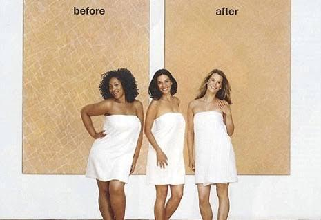
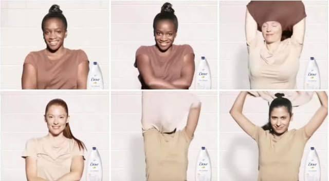

Resumen.
A diferencia del racismo tradicional, el colorismo se centra en preferencias basadas en el color de la piel, incluso dentro de diferentes grupos raciales. En México, la discriminación racial es omnipresente en los medios de comunicación, y la publicidad favorece a las personas de piel clara a pesar de que la mayoría de las personas tienen tonos intermedios. Estos anuncios vistos en la televisión y las redes sociales pueden influir en las percepciones y la aceptación de los estándares de belleza por parte de las personas, creando estereotipos. La investigación se enfoca en un estudio comparativo de dos anuncios de Dove que muestran un patrón: la comparación entre tonos claros y oscuros expuestos de forma en la cual se cuestionó el impacto del colorismo en México.
Palabras clave:
Colorismo; blanquitud; discriminación; estereotipos; publicidad.
Abstract.
Unlike traditional racism, colorism focuses on preferences based on skin color, even within different racial groups. In Mexico, racial discrimination is omnipresent in the media, and advertising favors individuals with lighter skin despite the majority of people having intermediate tones. These advertisements seen on television and social media can influence people's perceptions and acceptance of beauty standards, creating stereotypes. The research focuses on a comparative study of two Dove ads that reveal a pattern: the comparison between light and dark tones presented in a way that questioned the impact of colorism in Mexico.
Keywords:
Colorism; whiteness; discrimination; stereotypes; advertising.
La discriminación hacia las personas de color se ha visto presente en la historia por temas de inferioridad, donde las personas con tonos de piel oscuros eran tratados como una raza inferior por la gente blanca, incluso estos eran asociados con impureza puesto que la discriminación racial se presenta cuando un miembro de un grupo racial es objeto de trato distinto o desigual en función de su raza (Azabache, 2017).
En los últimos años, se ha incorporado un nuevo término para sumarse a las discusiones sobre el racismo, en la que se clasifica a las personas por su color de piel, sin que estas puedan percatarse que por sus facciones y rasgos son desplazados de oportunidades, el colorismo. Este término a diferencia del racismo clásico, no suele utilizar la categoría de raza para legitimar una supuesta diferencia esencial entre personas y grupos, sino que se utiliza la categoría del color, sin embargo, para ambos conceptos los principales referentes se basan en los rasgos físicos, aspectos superficiales de la persona. De esta manera, el colorismo podría denominarse racismo del fenotipo, que, a diferencia del racismo cultural o racismo sin razas, se basa en la creencia de una supuesta superioridad de unas culturas sobre otras (Tipa 2020).
Según Hunter (2007) y Jones (2000, ambos citados en el trabajo de Tipa, 2020), el colorismo privilegia a los tonos de piel más claros, que a diferencia del racismo científico, esta forma de discriminación también opera dentro de los grupos racializados, es decir, clasifica a las personas por grupos racializados: negros, latinos, asiáticos, entre otros, quienes experimentaran exclusión y discriminación en general, pero dentro de estos grupos, las personas con tonos de piel más claros reciben mayores privilegios (Tipa 2020).
El hecho de que el colorismo sea considerado una expresión del racismo es un punto crucial. La discriminación basada en el color de piel es una manifestación del racismo que opera en niveles sutiles y a menudo internalizados en las sociedades, las investigaciones y observaciones han demostrado que, incluso dentro de comunidades racialmente diversas, el color de piel puede influir en cómo las personas son percibidas y tratadas; el racismo sistémico y estructural también juega un papel importante en la perpetuación del colorismo.
Los términos colorista y fenotipo, ayudan a abordar el racismo de manera más precisa, la inclusión de otros atributos físicos, como el color de ojos y el cabello, en el concepto de racismo colorista, subraya la complejidad de esta forma de discriminación que no se limita únicamente al color de piel, sino que puede incluir una serie de características físicas. Esto destaca cómo la percepción de la belleza y el valor de una persona a menudo está relacionada con la conformidad con ciertos estándares de apariencia física.
El concepto del colorismo fue mencionado por primera vez en 1983 por la escritora Alice Walker (citado en FundéuRAE, 2020), para describir el fenómeno social y cultural que refiere a la discriminación y preferencia contra individuos basados en su tono de piel entre personas del mismo grupo étnico o racial. En México, es sencillo identificar el problema del colorismo en la representación que se hace en medios de comunicación, concretamente en la televisión, porque aun cuando el 66 % de la población mexicana tiene piel color morena clara a media, y el 6% son de tez morena oscura (Campos y Rivas, 2020) los anuncios publicitarios se representan con personajes que tienen tonos de piel que no son propios de este.
En este sentido, la Encuesta de Consumo de Contenidos Audiovisuales (ENCCA, 2022, citada en, Instituto Federal de Telecomunicaciones IFT. 2022), señala que la población mexicana consume un promedio de 2.5 horas al día por persona de televisión abierta y 3 horas de video en plataformas de internet, además el 77% de las personas continúan usando la televisión abierta como principal medio de consumo audiovisual y entre los contenidos más vistos por este medio están los noticiarios y las películas.
De tal manera que es posible inferir que por la cantidad de tiempo promedio que un mexicano, pasa frente al televisor, se expone a anuncios publicitarios que muestran una representación sesgada o estereotipada de los tonos de piel, a lo que Tipa (2019a) señala que en el imaginario colectivo, las personas que se muestran en los anuncios publicitarios parten de la premisa de crear un sentido de empatía con el público, creando así la promoción de ciertos estándares de belleza, y la martirización de otros para favorecer la percepción y aceptación de los productos promocionados.
En el que además el discurso publicitario entendido como la comunicación utilizada en la publicidad para transmitir un mensaje persuasivo a una audiencia específica, con la finalidad de vender un producto o servicio partiendo de un conjunto de estrategias (Yalán, 2018, citado en Monteros 2021), se utiliza para atraer la atención del público y crear un interés, por lo que la televisión crea clichés, que tipifica los estratos sociales, el origen, la raza, el género o cualquier otra condición de tener una tipificación social, por lo que estos clichés publicitarios pueden tener un impacto significativo en la sociedad, ya que se convierten en modelos de comportamiento.
Según Durin y Vázquez (2013, citados en Tipa 2019a), el contenido que se muestra en los medios de comunicación, es una manera de representar la forma en que las personas se reconocen entre sí, pero sobre todo a la expectativa de lo que tienen derecho de ser o recibir, por lo que los modelos que son empleados para la parte visual de la publicidad desempeñan un papel fundamental en la formación de la percepción del público (Castoriadis, 1989; Vergara, 2002, citados en Tipa, 2019a), que incluye lo deseado o indeseado en términos del aspecto físico y corporal, lo que abarca aspectos como el tono de piel, el color de los ojos, del cabello y otras características similares, por lo que a través de estas representaciones imaginarias la población aprende y asimila ciertas ideas y estándares, los cuales tiende a reproducir, por lo que los imaginarios se transforman en significados y representaciones mentales, que funcionan como un punto de referencia que permiten a las personas referirse a un concepto o idea específica.
Para Adorno (2009, citado en Rodríguez et al., 2022), estas situaciones se convierten en clichés que crean “el engaño de la vida duplicada” donde la vida se duplica en la pantalla y toma el lugar de la vida misma, por lo que es posible reconocer que los medios de comunicación pueden moldear las percepciones y actitudes de las personas al presentar modelos de comportamiento que pueden ser adoptados o imitados. Para Marway (2017, citado en Monteros, 2021), en el caso de las mujeres, estas son influenciadas para creer que el estándar de belleza radica en un tono de piel blanca y brillante, y por ende cualquier diferencia en su piel, sale del canon de la belleza, por lo que la publicidad trastoca sus vidas de diversas formas y genera expectativas, que incluso las puede llevar a poner en riesgo su salud.
En el caso de México, esta situación ha sido cuestionada por algunos investigadores (Tipa, 2020, 2021, 2023a, 2023b; Chong, 2022; Vargas, 2017), quienes, ante la diversidad étnica y cultural del país, señalan que la publicidad enfrenta desafíos significativos en términos de representación equitativa, ya que el colorismo expuesto en la publicidad además de no ser ético, refleja la discriminación basada en el tono de piel.
Esta situación no sólo se da en campañas publicitarias de productos nacionales, sino que marcas multinacionales, que se autodenominan socialmente responsables, incurren en este tipo de prácticas, y aun cuando algunos comerciales se tropicalizan a la región donde serán proyectados el estándar de la piel blanca perfecta, se hace presente, tal es el caso de la marca DOVE, que en años recientes ha diversificado su publicidad, sin embargo, continúa haciendo énfasis en ciertos comerciales, con la presentación de modelos de tez clara en contraste con modelos con tonos de piel más oscuros, en los cuales se presentan como un antes a las actrices con tonos de piel oscura y un después a actrices con un tono de piel blanco y/o más claro, generando un sentimiento de aspiracionismo y una falsa creencia de que la población debe de ser blanca.
En este sentido, este trabajo busca describir como los anuncios publicitarios Jabón de ducha y Real Beauty, lanzados en México por la Marca Dove promueven la discriminación a través del colorismo al mostrar un ‘’antes’’ a los tonos de piel más oscuros y un ‘’después’’ a tonos de piel más claros, por lo que se hará una comparación entre los contenidos que promueven la discriminación por colorismo bajo la premisa del cuidado de la piel, de estos anuncios publicitarios.
En el ámbito de la publicidad, los estereotipos se manifiestan como representaciones convencionales y preconcebidas de diversos grupos sociales, géneros, razas o características físicas. Estas representaciones se utilizan para transmitir mensajes publicitarios, pero pueden perpetuar ideas erróneas o simplistas. Por ejemplo, los estereotipos de género en la publicidad suelen retratar a las mujeres como consumidoras obsesionadas con la belleza y a los hombres como proveedores dominantes. El estereotipo racial está vinculado al color de piel o a la raza, diferenciando entre personas blancas y negras, mientras que la etnia se refiere a grupos que poseen distintas cualidades y características de vida, abarcando aspectos culturales, políticos y sociales (Azabache, 2017). De esta manera un estereotipo, en términos generales, se refiere a una creencia o representación simplificada y a menudo rígida de un grupo, un individuo o característica, que se basa en ciertos rasgos percibidos o supuestos.
Al hablar de estereotipos raciales en la publicidad, estos se pueden reconocer incluso antes de que se generen los contenidos publicitarios, la estereotipación racial en la publicidad se hace presente desde el momento en que se establecen los requisitos físicos que deben cumplir los actores que participan en los castings. Tipa (2020), identifica que el protagonismo de los contenidos publicitarios, se otorgan a individuos con tonos claros de piel, característica que además se asocia con el estatus social y el poder adquisitivo, situación que se vuelve evidente en la publicidad, no solo por el papel protagónico, sino que se utiliza como una estrategia mercadológica para presentar el aspiracionismo, que evoca al público o los consumidores para encontrarse en esa posición, por lo que la publicidad construye imaginarios sobre la blanquitud del cuerpo, que se acompaña de recompensas simbólicas y económicas como son el estatus y el poder. De manera tal, que una persona inconsciente o conscientemente buscará pertenecer al imaginario que es presentado por la publicidad, y será capaz de modificarse con el objetivo de alcanzar lo reflejado por los anuncios, en el que, al ser un individuo de tez clara puede tener un mejor estatus, posición económica e incluso poder.
Para Azabache (2017), el colorismo en la publicidad además de la expectativa que crea la blanquitud, también fomenta la discriminación de la negritud, es decir, el autor encontró que en publicidad relacionada con telefonía en una región caribeña, se mostraba a la raza negra como clientes meta para telefonía prepago y para las personas de raza blanca se dirigían lo planes y servicios post pago, por lo que para Queiroz (2017, citado en Azabache, 2017), no es la raza lo que mueve a las comunicaciones, sino las aspiraciones que presenta, por lo que estas acciones, refuerzan un estereotipo racista asociado a la capacidad adquisitiva de una raza con respecto a la otra, de tal manera que se promueve además de la discriminación, la construcción de prejuicios asociados tanto al color de la piel, como a la actitud asumida por las personas.
Un estándar de belleza, en términos generales se refiere a un conjunto de características físicas, atributos estéticos o cualidades que una sociedad o cultura considera como ideales en términos de apariencia y atractivo. Estos estándares varían de una época a otra y de una cultura a otra, pero tienden a influir en la percepción colectiva de la belleza. En el contexto de la publicidad, se utilizan para promover productos y servicios relacionados con la apariencia física, como cosméticos y moda. Sin embargo, la publicidad suele reforzar o generar estándares de belleza que pueden ser inalcanzables o poco realistas, lo que puede llevar a la promoción de una imagen corporal poco saludable o la discriminación de ciertos tipos de belleza.
Para referirse a los estándares de belleza, en la sociedad se está acostumbrado a vivir con ideas preconcebidas sobre cómo debe ser la apariencia física de una persona para encajar de manera correcta. Como menciona Katz (2021), la construcción social se forma a partir de las representaciones que condicionan y legitiman el poder, la desigualdad y la dominación, así como la idea de que el consumo de bienes genera estatus. Esta práctica es utilizada por algunas marcas femeninas, como Dove, que crean una idea de que la mujer siempre debe lucir bien y sobre todo aclarar su piel para tener esa imagen esperada y deseada por la sociedad, ya que una persona con piel blanca por lo general representa más autoridad o poder.
En este sentido, Barkty (2015, citado en Quel 2023), señala que el ideal de belleza es una construcción patriarcal y propone a las mujeres liberarse de estos ideales, no obstante, en la realidad este ideal afecta a las mujeres de diferentes culturas, por lo que se debe discutir en torno ellos, ya que estos estándares y estereotipos son plasmados desde la antigüedad, donde la mujer era considerada bella, si tenía complexión delgada, piel blanca y pálida, además de tener el cabello largo, fino y rubio (Dsigno, 2017, citado en Quel, 2023).
Tradicionalmente, la racialización se ha entendido como un proceso de identificación que implica la jerarquización y exclusión de individuos en función de sus características raciales, este proceso se basa en la creencia errónea de que el color de la piel determina la supuesta esencia del sujeto, y tiene consecuencias tangibles que influyen en diferentes áreas de sus vidas. A pesar de que las teorías sociales de la raza argumentan haber abandonado los enfoques biologicistas que históricamente han definido la discusión sobre la raza, no alcanzan a liberar el discurso, de manera que sea capaz de reconocer que la raza es una condición del cuerpo que se manifiesta en un contexto social (Pérez et al., 2022). En este sentido, históricamente y desde una corta edad, a la sociedad se le otorgan ideas sobre ciudadanos con características similares, con las que pueden tener una percepción errónea sobre ellas, por ejemplo, las ideas de que por el simple hecho de que alguien tenga un tipo de color más oscuro que la mayoría, pueden representar que se trate de una trabajadora doméstica o un trabajador de una obra, porque gracias a los anuncios publicitarios o a las mismas ideas con las que los individuos se van formando a lo largo de su vida, se crea esta percepción que es equivocada.
Para Mbembe (2016, citado en Pérez Casanovas, et al (2022) la raza es aquello que se puede mantener a una distancia de sí mismo y del que es posible deshacerse cuando ya no es útil, lo que deja de lado la virtud de una esencia, una cultura, o un modo de actuar, sino que se otorga en virtud de una asignación racial, de un nombramiento ajeno a sí mismo. Su asignación racial no es puesta por sí mismo sino por otro, para hacer de él un excluido, una identidad que le es incorporada. Ahora bien, este discurso tiene un reverso, el sujeto racializado, tal y como lo demuestra la historia, no ha permanecido inerte ni pasivo ante la asignación racial, por el contrario, los sujetos racializados han sabido saltar de la asignación externa impuesta, a la re-significación, esta última es entendida por Mbembe (2016, citado en Pérez, et al., 2022), como el llamamiento a la raza, diferente de la asignación racial. El primero es un acto político: da lugar a lo que quiere ser invisibilizado; en cambio, el segundo, es el acto de invisibilización, de imposición de un imaginario racial construido desde el discurso de poder.
La discriminación es un término que según el Consejo Directivo de la Revista Mexicana de Orientación Educativa (REMO, 2011), se refiere al acto de tratar de manera desigual o injusta a una persona o grupo de personas debido a características como su raza, género, orientación sexual, religión u otros atributos personales, en este sentido, la discriminación puede manifestarse en diversas formas, como el trato injusto en el empleo, la educación, el acceso a servicios o la negación de oportunidades debido a prejuicios basados en características específicas, por otro lado, la discriminación colorista se centra en el trato diferencial basado en el tono de piel o el color de piel de una persona, y es un aspecto específico de la discriminación racial, en este caso, las personas son objeto de discriminación no tanto por su raza en sí, sino por la tonalidad de su piel.
Para Azabache (2017) la discriminación racial sucede cuando se trata de manera diferente o desigual a un individuo perteneciente a un grupo racial en diversas situaciones, basado en su pertenencia a una determinada raza, con esto, el colorismo se considera como una evolución o expresión más del racismo, que según Tipa (2020) funciona bajo el criterio de color, porque tiene en consideración las características físicas de las personas, siendo así una manera de discriminación por el color de la piel, además del de los ojos y el cabello, lo que lo coloca en un tipo de racismo colorista, que además incluye actitudes y prácticas racistas en función de la superioridad del otro, y, por ende, ocupan posiciones más bajas en las relaciones de producción, sociales o de poder, convirtiéndose así en una forma más sutil del racismo y un tanto más difícil de detectar al no ser tan explícito pero siguiendo los principios de segregar y hacer menos a las personas con tonos de piel más oscura de acuerdo a sus características físicas, y enalteciendo a facciones más finas.
En el ámbito del marketing y la percepción de los productos de aseo personal y limpieza del hogar, Rodríguez et al, (2022), encontraron que la publicidad del siglo XX continua con la fijación de la condición negra desde un prejuicio de esclavitud en el imaginario de las personas, en el que se asocia a lo sucio, por lo que el jabón y la higiene se representan nuevamente como una conquista del hombre blanco y se promocionan explícitamente como medidas de riqueza, civilización, salud y pureza de las sociedades. Es decir, hay un claro antecedente en la publicidad que los tonos de piel obscuros cargan con el peso histórico asociado con la pobreza, esclavitud y prácticas de higiene nulas en comparación de los hombres conquistadores.
En este sentido, los contenidos publicitarios, fomentan el colorismo y contribuyen con el racismo estructural que configura las relaciones interpersonales de todos los días; estas representaciones mediáticas que tienen como base el color, naturalizan el racismo, además de asociarlo con las restricciones socioeconómicas que se asocian con los tonos de piel (Tipa, 2020). En donde los contenidos televisivos de principios de la década de los dos mil hasta mitad de la siguiente, se puede notar una marcada representación blanca del mexicano en los spots publicitarios desde juguetes, medicinas, cadenas comerciales hasta productos de higiene y cuidado para la piel que dejaron al mexicano con la percepción de la realidad alterada ante su propio color de piel.
El término de blanquitud es otro fenómeno racial estructural que marca como inferiores a los grupos étnicos no occidentales, como explica Echeverría (2007, citado en Rodríguez et al., 2022), en el desarrollo del discurso de la blanquitud existe una jerarquización entre cuerpos que merecen el desarrollo y otros que deben costearlo, en este sentido, quien tiene un tono de piel obscuro, puede blanquear su imagen siempre y cuando pueda pagarlo, hacerlo significa adaptarse al discurso moral y ético del capitalismo, de modo que las personas no blancas deben de gastar sus recursos en aspirar ser más blancos y conseguir los mismos privilegios, en los que además la blanquitud es la visibilización del capitalismo como identidad, que está determinada por la blancura racial, pero que ésta, es relativa, puesto que las identidades jerarquizadas no dependen únicamente de la raza, pero sí marcan posiciones de desventaja o privilegio, a partir de la historia (Rodríguez et al, 2022), lo que contribuye en generar relaciones de poder desiguales en la sociedad y que son reflejadas en las diferentes formas de interacción de los individuos.
Con respecto a la publicidad, Tipa (2020), señala que los contenidos de los anuncios crean una imagen sobre la blanquitud, dando a entender que involucra de esta manera recompensas simbólicas de estatus y socioeconómicas, por lo que la publicidad presiona a las mujeres del mundo, para acercarse a la apariencia ideal basándose en lo físico, mostrando situaciones que vuelven al deseo algo que se puede complacer con un objeto.
En este sentido, a manera de síntesis, en la Tabla 1 se muestra la operacionalización de las variables que sirven como delimitación de este trabajo de investigación y permiten reconocer de manera objetiva, el análisis que se llevó a cabo.
Tabla 1. Operacionalización de variables
| Categoría | Definición Conceptual | Subcategoría | Definición conceptual por categoría | Observables |
|---|---|---|---|---|
| Racismo | Se hace referencia a actitudes (opiniones, creencias, prejuicios o estereotipos), a comportamientos o prácticas sociales (apartar, discriminar, segregar, perseguir); también funcionamientos institucionales excluyentes y a ideologías que se basan en ideas erróneas sobre la existencia de grupos humanos inferiores y superiores (Iturralde y Velázquez, 2016). | Colorismo | Evolución o expresión del racismo, funcionando bajo el criterio de color, ya que toma en cuenta los rasgos físicos de la persona, por ello también se le denomina racismo del fenotipo (Tipa, 2020). | La representación de personas de diferentes tonalidades de piel en los comerciales. |
| Racialización | La racialización es un proceso de identificación que implica la jerarquización y exclusión de individuos en función de sus características raciales. (Pérez Casanovas, et al (2022). |
Cómo se categoriza a las personas en función de características físicas como el color de piel, rasgos faciales, cabello u otros atributos visibles | ||
| Blanquitud | Marca como inferiores a los grupos étnicos no occidentales (Echeverría 2007, citado en Rodríguez et al., 2022). | Cómo las personas de piel blanca son representadas de manera predominante en la publicidad, como la promoción de estándares de belleza que enfatizan la piel blanca. | ||
| Discriminación | Acto de tratar de manera desigual o injusta a una persona o grupo de personas debido a características como su raza, género, orientación sexual, religión u otros atributos personales (REMO, 2011). | Estereotipos y representaciones simplistas o negativas de personas de diferentes razas en la publicidad, lo que puede implicar el uso de clichés y representaciones erróneas. | ||
| Publicidad | Es la difusión o divulgación de información, ideas u opiniones de carácter político, religioso, comercial, etc., con la intención de que alguien actúe de determinada manera, piense de acuerdo ciertas ideas o consuma algún producto (Impactum, 2023) | Estándares de belleza | Conjunto de características físicas, atributos estéticos o cualidades que una sociedad o cultura considera como ideales en términos de apariencia y atractivo (Katz, 2021). | Cómo se representan las personas y analizar si estas representaciones se ajustan a un estándar de belleza particular. |
| Estereotipos | Construcción cultural cuyo fin es generar constante frustración en las mujeres al imponérsele ideales de belleza (Wolf, 2020 citada en Quel, 2023). | Manifestaciones y elementos concretos que pueden identificarse y analizarse en relación con la representación de estereotipos en la sociedad. Como el lenguaje y el discurso. |
Fuente: Elaborado a partir de los autores citados en la misma tabla.
Para el diseño de esta investigación se seleccionó un enfoque de tipo explicativo, cuyo objetivo principal es identificar las relaciones entre las variables y proporcionar una comprensión más profunda del fenómeno investigado. Según autores como Hernández y Mendoza (2018), esta metodología es adecuada cuando se busca no sólo describir y caracterizar los fenómenos, sino también explicar las razones subyacentes a ciertos comportamientos o resultados.
Se utilizó en un enfoque cualitativo para la recolección y análisis de datos, debido a que su naturaleza reflexiva, privilegia el análisis de las experiencias, los sentimientos y los significados que los fenómenos sociales tienen para quienes participan de ella (Pérez, 2002), lo que permitió profundizar en temas como la racialización, la blanquitud y sobre todo el colorismo.
Para la recolección de datos se llevaron a cabo focus group con la finalidad de conocer la perspectiva de diferentes grupos de personas hacia los comerciales analizados en este documento; se eligió esta técnica debido a que permite obtener información sobre diversas ideas y sentimientos que tienen los participantes (Rabiee, 2004) con respecto al colorismo y la blanquitud en la publicidad. Se utilizó una entrevista semiestructurada, con base en preguntas abiertas que aplicada a través de focus group permite obtener respuestas profundas y honestas, que en lo individual podrían no darse, además que permite acotar el tema de discusión (Hernández y Sepúlveda, 2022). Se realizaron a través de la plataforma Google Meet, con la participación de 4 personas cada uno, lo que permitió grabar las sesiones posteriormente al consentimiento informado. Se utilizó la saturación teórica como criterio del trabajo de campo (Ortiz, 2015), esta se obtuvo en el cuarto focus group, pero se desarrolló uno adicional para validarlo.
La selección de informantes se basó en criterios específicos para garantizar la representatividad y la relevancia de las voces y perspectivas recopiladas, en este caso, ciudadanos mexicanos radicados en Guadalajara Jalisco de entre 19 a 45 años con tonalidades variadas de piel identificadas a partir de la clasificación del color realizada por el Proyecto sobre Etnicidad y Raza en América Latina (PERLA, Ver imagen 1), para una perspectiva general y mejor apreciación sobre las variables y el contenido de los anuncios.
Imagen 1. Paleta de colores PERLA
Fuente: Princeton University (s.f.)
Los inicios de la marca se remontan a la segunda guerra mundial, cuando el ejército norteamericano incorporó crema humectante a sus jabones para limpiar a los heridos, siendo este el factor que posteriormente identificaría a la marca. En un mercado de belleza y cosméticos, donde las tendencias generadas por las marcas para ser más notorias presentaban modelos y estereotipos de belleza marcados como cierta altura, peso, tipo de cabello y una piel fina como si de una muñeca se tratase, Dove quiso presentarse como la marca amiga, bajo la idea de la “Belleza Democrática”, proponiendo una valoración igual de la belleza particular e inimitable de cada mujer. A partir de aquí, analizaron investigaciones de varios estudios médicos acerca de la percepción de la belleza y su influencia social para partir a un estudio propio que conlleva a gran parte de lo que es la estrategia de la marca, ‘’la belleza real’’.
Si bien las campañas que nacieron bajo esta premisa fueron aceptadas por el público, algunos criticaron la estrategia alegando que las mujeres “reales” de la campaña no se corresponden con la media y que, dentro de la gente normal, se caracterizan por ser bastante agraciadas. En este sentido, como antecedente acerca de su búsqueda por ser una marca que aborda una problemática social, se cuestionó el lanzamiento de las campañas a discusión de este artículo ‘’Jabón de ducha (2011) y Real beauty (2017)’’, donde la interpretación del racismo a partir del colorismo se hace presente en las piezas mostradas.
Para los criterios de selección de piezas publicitarias de la marca Dove, se estableció que los contenidos presentaran una comparación del color o la tonalidad en una persona de tez oscura con otra de tez más clara, en la cual se hacía referencia a que el cambio de piel a tonos más claros es a lo que una persona debe aspirar para alcanzar los estándares que refleja la marca en su comunicación, por lo que se eligieron los anuncios publicitarios ‘’Jabón de ducha’’ y ‘’Real beauty’’, los cuales hacen énfasis en la promoción de una piel blanca, bajo la premisa del cuidado de la piel (Ver imágenes 2 y 3).
Imagen 2. Jabón de ducha

Fuente: DailyMail (2011)
Imagen 3. Real beauty

Fuente: Gutierrez, C. (2022)
Posteriormente a la realización de los focus group, se transcribieron las discusiones y se procedió al análisis a través de las subcategorías descritas en la tabla 1. Para la presentación de los resultados, se utilizan fragmentos de las entrevistas, que permiten reforzar los hallazgos empíricos y discutirlos con otros autores. Se utiliza un número de participante y el número de focus group en el que se dio la conversación, para guardar el anonimato.
A continuación, se presentan los resultados por cada una de las categorías de análisis que sirvieron como delimitación de este trabajo.
Durante esta categoría que se refiere al racismo del fenotipo, ya que está basada en los rasgos físicos superficiales de las personas y que también está basado en la creencia de una supuesta superioridad de algunas culturas sobre otras. Las personas que tienen un tono de piel claro, usualmente suelen ser más privilegiados solo por esa razón, eso es el colorismo.
Al haberse mostrado los anuncios publicitarios que se utilizaron para este trabajo una de las participantes mencionó: “si se está promoviendo el colorismo, por la manera en la que se posiciona a cada modelo” (P1, F4), mientras que otro participante señala:
Claro que lo está promoviendo, tanto por sus ejemplos de poner a alguien de tez muchísimo más oscuro e ir aclarándola, a alguien pues blanca; pues eso lo están promoviendo y ese tipo de productos deberían de ser y deberían demostrar que son para manchitas, en la axila en la entrepierna, incluso en los codos o las rodillas, pero ponen a alguien que cambia completamente de su color de piel y eso para nada que ver, qué es para lo que se supone sirve el producto, para lo que es el producto (P1, F5).
Estos comentarios, permiten reconocer la presencia de una jerarquización donde se evidencia que las personas con piel oscura son incentivadas a cambiar su color de piel por uno más claro, que como señala Tipa (2021), las personas dentro de grupos racializados son motivados a cambiar su tonalidad de piel, porque se cree que incluso dentro de estos grupos, aquellos con tonos de piel más claros tienden a recibir mayores privilegios.
Esta categoría se refiere a una construcción social en escalas en función de su raza dándoles un valor, las cuales se les asignan características y comportamientos específicos, donde gozan de privilegios las personas pertenecientes a una raza superior. El principal hallazgo sobre la racialización fue que a las modelos de tez oscura siempre las presentan de maneras muy diferentes a las modelos de un tono de piel más claro: “Una persona que tiene tez más oscura, a veces las ponen con el cabello más desarreglado o en diferentes circunstancias” (P2, F5).
Para Azabache (2017) esto se puede asociar a la discriminación racial, la cual se manifiesta cuando a un individuo perteneciente a un grupo racial se le trata de manera diferente o desigual, aunque para Tipa (2021), esto se genera debido a que se representa a las personas de tez morena en diferentes contextos socioeconómicos y culturales.
Adicionalmente, este hallazgo plantea una nueva pregunta, será que la inclusión en la publicidad de las marcas está asociada a la presentación de estereotipos raciales, porque a pesar de que se incluyen en la publicidad, su papel, se presenta en condiciones desiguales a quienes tienen tono de piel clara.
Esta categoría se refiere a la asociación con el poder y el privilegio que tienen las personas de tez más clara en comparación con la discriminación y desigualdad que han sufrido las personas con un color de piel más oscuro, es un concepto que cuestiona y visibiliza una problemática social, que muestra cómo son las estructuras socioculturales. Para la participante 1 del focus 3, al hablar sobre el contenido de la publicidad, señala que “lo blanco, lo más clarito, lo perfecto, la piel sin manchas es lo mejor, es lo que a mí el anuncio me quiere dar a entender” (P1, F3).
En este sentido, todos los participantes de los focus group de manera unánime señalaron que el tono de piel más claro otorga más privilegios, llevando a que las personas aspiren a alcanzar ese estándar: “se inculca la creencia de que las personas blancas son más buenas, son más listas, son más en todos los sentidos” (P2, F3).
Estos testimonios subrayan la poderosa influencia que los estándares de blanquitud tienen en la construcción de percepciones y aspiraciones de los individuos, que para Navarrete (2020), esto representa una conexión significativa entre el tono de piel y el estatus socioeconómico de un país; el autor señala que aquellos con una tez más clara generalmente disfrutan de ingresos superiores, niveles educativos más elevados y ocupan posiciones más ventajosas en comparación con aquellos de piel más oscura.
Esta categoría hace referencia al acto de tratar de manera desigual o injusta a una persona o grupo de personas debido a características como su raza, género, orientación sexual, religión u otros atributos personales. Los participantes del focus reflejaron reiteradamente que son temas con los que fueron creciendo indistintamente de su contexto, desde lo escolar hasta en la propia casa “siento que muchas veces desde chiquitos, incluso las personas más grandes decían cómo es que ¡oh! ¡mira qué bonita es güerita!’’ (P3, F1), lo que de manera inconsciente los lleva a tratar de parecerse para obtener esa misma aprobación, ya que se considera que, “si no eres blanca y de cabello rubio, no eres bonita” (P4, F2).
Las y los participantes de los focus group consideran que, si una persona recibe comentarios positivos y atención al tener una tonalidad de piel más clara, eso será lo que se busque durante toda su vida, ya que necesitan sentirse adaptados y pertenecer a ese grupo; ellos también consideran que desafortunadamente es así desde edades tempranas donde se es más susceptible, los niños crecen con este tipo de ideas debido a su entorno, que va desde los contenidos televisivos, hasta los comentarios en casa, los cuales fortalecen la discriminación por los tonos de piel:
Yo tengo la piel muy morena entonces desde que estoy chiquita era como de… quiero aclarar mi piel… por qué no es como lo veo en la tele, no es lo que veo en los anuncios, pero siempre era como que quería aclarar mi piel para sentirme más bonita, para sentir como que encajaba, que si me veían era porque ¡ah tengo la piel bonita! entonces muchas veces… sí hay ciertos comentarios negativos hacia tu persona por tu color de piel, hay cierta discriminación… [porque desde niña] te quedas como ¿qué onda?, o sea está mal que mi color de piel sea moreno o está mal que tú pienses que tener la piel un poco más blanca es mejor (P3, F2).
La experiencia de esta participante se puede explicar por lo que señala Muñiz (2013, citado en Tipa 2019b), quien señala que las expectativas que la sociedad ha impuesto corresponden a los estándares occidentales de belleza, marcados por la piel blanca, el cabello rubio y las facciones caucásicas, por lo que estar fuera de ellos hace a las personas sujetas a discriminación.
Con respecto a estándares de belleza, que como ya se mencionó corresponden a un conjunto de características físicas, atributos estéticos o cualidades que una sociedad o cultura considera como ideales en términos de apariencia y atractivo, se pudo identificar que, para los participantes, los estándares de belleza están muy bien establecidos al punto de ser ya un referente en el pensamiento colectivo, algunas de las participantes se han sentido acomplejadas pues la belleza que representan en la publicidad de la televisión les ha hecho creer que no son lo suficientemente bonitas:
Todo tiene que estar perfecto y bien cuidado y excelente estado porque si no, no entras en el estándar de belleza, porque ya te hace falta no sé el tamaño de la nariz o el tamaño del grosor de los labios entonces creo que todavía predomina la típica imagen estadounidense (P1, F5).
Para otra participante, esto se puede asociar directamente a la cultura mexicana:
A los mexicanos desde siempre se nos ha metido como la cultura de que tener una piel morena, trigueña, es malo, de hecho, los estándares de belleza siempre buscan como que chicas más blancas y güeras (P4, F3).
Al respecto, González (2018) señala que, si en los primeros años se les enseña a las niñas que serán admiradas, elogiadas y capaces de enamorar al punto de ser normalizado por las mujeres, eventualmente aceptarán los estándares impuestos reafirmando la idea que promueve la industria estética sobre la belleza. Entonces si no se tiene una piel perfecta, cierta altura, peso, o un tono de piel claro automáticamente no se entra en los cánones impuestos por la publicidad, aspirando solamente a la posibilidad de entrar en ese estándar si se consumen ciertos productos que prometen que cambiando tu cuerpo podrás ser aceptada por la sociedad. Además, asegura que las empresas dedicadas a productos estéticos buscan mostrar los desperfectos en los cuerpos de las mujeres, lo que las llevará a una imagen insuficiente de sí mismas para terminar convenciéndolas de que deben cambiar de acuerdo a los productos que ellos ofrecen, por lo que una persona que ha crecido con estos mensajes sobre la perfección a través de una modelo típicamente blanca y perfecta, inconscientemente crecerá con la idea de que esa imagen que ve en la televisión es lo que tiene que llegar a ser para poder sentirse bonita (González, 2018).
Esta categoría se refiere a ciertas características específicas que tienen algunas personas, que se muestran principalmente en los modelos o actores que aparecen en los anuncios publicitarios. Los estereotipos al igual que los estándares de belleza, provocan una idea errónea de cómo debe ser o verse una persona para percibirse como alguien importante o incluso, simplemente sentirse más bellos o aparentar un nivel socioeconómico más alto; en este sentido los participantes reconocen que: “Los estereotipos que he visto en la publicidad son la típica imagen que tenemos de la niña güerita con ojos azules, con ojos verdes, rubia lacia, alta, delgada” (P1, F1); o “estar delgada es mejor, la piel clara es mejor, el cabello lacio y largo es mejor” (P3, F3).
Desde la visión de Katz (2021), esto se explicaría debido a que la construcción social se forma a partir de las representaciones que condicionan y legitiman el poder, la desigualdad y la dominación, así como la idea de que el consumo de bienes genera estatus.
Esta investigación permitió reconocer la percepción que del color de la piel se tiene en la sociedad mexicana. Si bien es cierto los resultados no pueden ser generalizables por el universo de estudio, se pueden apreciar comentarios, que en apariencia son inofensivos, relacionados con las tonalidades de piel, pero reconocen cómo se enaltecen a las pieles claras por sobre las oscuras, lo que representan un riesgo, debido a que los miembros de la familia más jóvenes son susceptibles a replicar estos comentarios, crecer con ellos o llegar a sentirse menospreciados por no parecerse a las modelos que se muestran en la televisión.
A pesar de las limitaciones de tiempo, se pudo concluir que el colorismo está presente en los anuncios publicitarios analizados, y que, a pesar de los esfuerzos de las marcas por crear inclusión, se siguen utilizando los mismos tipos de modelos, con los típicos rasgos físicos cómo son: tener cabello lacio, ser delgadas y atractivas, pero una de las cosas más notorias y en la que se basó esta investigación, fue el color de piel, las modelos por lo general suelen ser personas de piel clara. Con respecto a la marca Dove, las personas entrevistadas estaban de acuerdo en que los anuncios mostrados promueven el colorismo, ya sea por los actores que utilizan debido a sus rasgos físicos o por el contexto que se presenta en el anuncio.
Como parte de esta investigación se pudo reconocer la existencia de racismo asociado al colorismo, el cual se basa principalmente en una supuesta superioridad de una persona blanca en comparación de una persona tez oscura, ya que se en los comentarios se pudo reconocer la percepción sobre cómo los blancos reciben mayores privilegios simplemente por su color de piel.
Si bien este trabajo se centró en los comerciales orientados al uso de cremas aclarantes, se sugiere abrir una línea de investigación enfocada a la representación de los distintos tonos de piel en otros contenidos publicitarios, para identificar si este tipo de percepción relacionado con el aspiracionismo a una piel blanca se encuentra presente, y cómo influye en las decisiones de compra de los consumidores.
Azabache, M. (2017). Impacto del estereotipo racial en las comunicaciones de marketing en Latinoamérica [Tesis de maestría, Universidad Privada del Norte]. Repositorio de la Universidad Privada del Norte. https://hdl.handle.net/11537/13321
Campos, R., & Rivas, C. (2020). El tono de piel de los mexicanos y su interacción con factores socioeconómicos. Coyuntura Demográfica, 17, 85-92.
Chong, N. G. (2022). Jóvenes e interseccionalidad, color de piel, etnia, clase: Zona Metropolitana del Valle de México. UNAM, Instituto de Investigaciones Sociales. https://ru.iis.sociales.unam.mx/handle/IIS/5923
Consejo Directivo de la Revista Mexicana de Orientación Educativa REMO. (2011). La Discriminación en México. Revista Mexicana de Orientación Educativa, 8(21), 1665-7527. http://pepsic.bvsalud.org/scielo.php?script=sci_arttext&pid=S1665-75272011000200001&lng=pt&tlng=es
Daily Mail (2011) ¿Una piel más clara?. El Mundo. [Imagen] Recuperado de: https://www.elmundo.es/yodona/2011/05/25/belleza/1306312906.html
FundéuRAE. (2020). «Colorismo», nuevo significado. https://www.fundeu.es/recomendacion/colorismo-neologismo-adecuado/
González, Y. (2018). La Violencia Estética en el Cuerpo Femenino como Expresión de la Identidad de las Mujeres: Un Estudio desde las Representaciones Sociales construidas por un Grupo de Mujeres Madres del Cantón de Palmares, durante el Año 2017-2018. [Tesis para optar por el grado de Licenciada en Trabajo Social de la Universidad de Costa Rica sede de Occidente]. Repositorio: https://ts.ucr.ac.cr/
Gutiérrez C. (2022) Real Beauty. [Imagen] Recuperado de https://x.com/ccaroo_gtz/status/1492158587417899008/photo/1
Iturralde Nieto, G., & Velasquez, M. E. (2016). Afrodescendientes en México: una historia de silencio y discriminación.CONAPRED. https://repositorio.dpe.gob.ec/handle/39000/2085
Impactum. (2023, abril 11). Mejores estrategias de Publicidad en 2023. Impactum Marketing. https://impactum.mx/mejores-estratgias-publicidad-2021/
Instituto Federal de Telecomunicaciones IFT. (2022). En México se consumen 2.5 horas de TV abierta y 3 horas en plataformas de video en internet, al día, por persona. (Comunicado 109/2022). IFT. https://www.ift.org.mx/comunicacion-y-medios/comunicados-ift/es/en-mexico-se-consumen-25-horas-de-tv-abierta-y-3-horas-en-plataformas-de-video-en-internet-al-dia
Hernández Rodríguez, T. M., & Sepúlveda Ríos, I. J. (2022). Empowerment through Femvertising: Reality or Myth? Mercados y negocios, 23(46), 83-100.
Hernández, Sampieri, R. & Mendoza, Torres, C. (2018). Metodología de la investigación: las rutas cuantitativa, cualitativa y mixta. McGraw Hill.
Katz, S. (2021). La representación del estereotipo de belleza en publicidades audiovisuales de la marca Dove, a partir del año 2010 hasta el año 2020 [Bachelor's thesis de la Universidad Siglo 21]. https://repositorio.21.edu.ar/handle/ues21/20326
Monteros, B. (2021) Efectos del colorismo en la representación de las mujeres de raza no blanca en la publicidad de belleza y cuidado de piel en el público femenino de 20 a 35 años. [Bachiller en Comunicación y Publicidad de la Universidad Peruana de Ciencias Aplicadas]. Repositorio Académico UPC https://repositorioacademico.upc.edu.pe/handle/10757/658138
Navarrete, F. (2020). La blanquitud y la blancura, cumbre del racismo mexicano. Revista de la Universidad de México. (8), 7-12. https://www.revistadelauniversidad.mx/articles/ca12bb18-2c40-40dc-add6-b0acd62fafbd/la-blanquitud-y-la-blancura-cumbre-del-racismo-mexicano
Ortiz, G. (2015). Técnicas de Investigación Cuantitativas y Cualitativas. La entrevista cualitativa. https://rua.ua.es/dspace/bitstream/10045/47795/1/Tema%206%20La%20Entrevista%20Cualitativa%20Grado%202014-15.pdf
Pérez Andrés, C. (2002). Sobre la metodología cualitativa. Revista española de salud pública, 76, 373-380.
Pérez Casanovas, Á., Rodríguez Estrada, D., Mariner-Cortés, M. y Meneses Pineda, L., (2022). Lavar la raza: Blanquita y la reproducción transgeneracional de la negritud en los medios masivos, de la televisión a Youtube. Revista Sarance (49), 5-22. https://doi.org/10.51306/ioasarance.049.01
Princeton University (s.f.) ‘’PERLA Color Palette’’ [Imagen] The Project on Ethnicity and Race in Latin America. https://perla.princeton.edu/perla-color-palette/
Quel, P, (2023). La Psicología Del Consumidor En Relación A La Campaña Publicitaria De La Marca Dove “Belleza Real”. [Licenciatura en Publicidad de la Universidad Técnica Del Norte].http://repositorio.utn.edu.ec/bitstream/123456789/14866/2/05%20FECYT%204348%20TRABAJO%20GRADO.pdf
Rabiee, F. (2004). Focus-group interview and data analysis. Proceedings of the nutrition society, 63(4), 655-660.
Rodríguez, D., Meneses, L., Mariner, M., & Pérez, Á. (2022). Lavar la raza: Blanquita y la reproducción transgeneracional de la negritud en los medios masivos, de la televisión a Youtube. Revista Sarance, Instituto Otavaleño de Antropología., (49), 5–22. https://doi.org/10.51306/ioasarance.049.01
Tipa, Juris. (2023b). La percepción del clasismo y el racismo colorista en la publicidad mexicana. CS, (41). https://doi.org/10.18046/recs.i41.01
Tipa, J. (2023a). ¿Por qué todas las niñas y niños son blancos? Racismo colorista en la representación corporal de infantes en la publicidad mexicana. LiminaR, 21(1).
Tipa, J. (2020). El capital y las prácticas corporales entre actores y modelos ante el racismo colorista en la publicidad en México. Estudios sobre las Culturas Contemporáneas, XXVI (51), pp. 151-183. Redalyc.org. https://www.redalyc.org/journal/316/31662848006/
Tipa, J. (2019a). “Latino internacional, no güeros, no morenos”. Racismo colorista en la publicidad en México. Universidad Nacional Autónoma de México. https://www.redalyc.org/journal/557/55766196008/
Tipa, J. (2019b). Jovenes y discriminación fenotipizada en la publicidad comercial y pólitica en México. Vitam. Revista de investigación en humanidades. 1. pp. 26-52 https://scholar.archive.org/work/ur6ct4ejhffivgykfmllo3p4gi/access/wayback/http://www.revistavitam.mx/index.php/vitam/article/download/33/35
Tipa, J. & Velasco, S & Nuño, U. (2021). El racismo colorista en los medios de comunicación en México. Expresiones contemporáneas de los racismos en México cuerpos, medios y educación. Prometeo Editores.
Vargas-Cano, M. R. (2017). El color como estrategia configurativa en publicidad. Sin perder de vista, 64.
Licencia: Esta obra está protegida bajo una Licencia Creative Commons Atribución-CompartirIgual 4.0 Internacional.